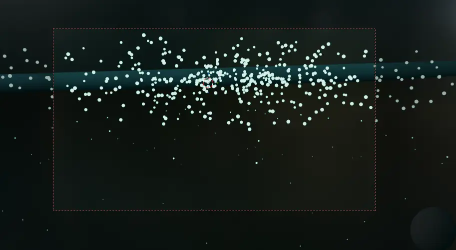
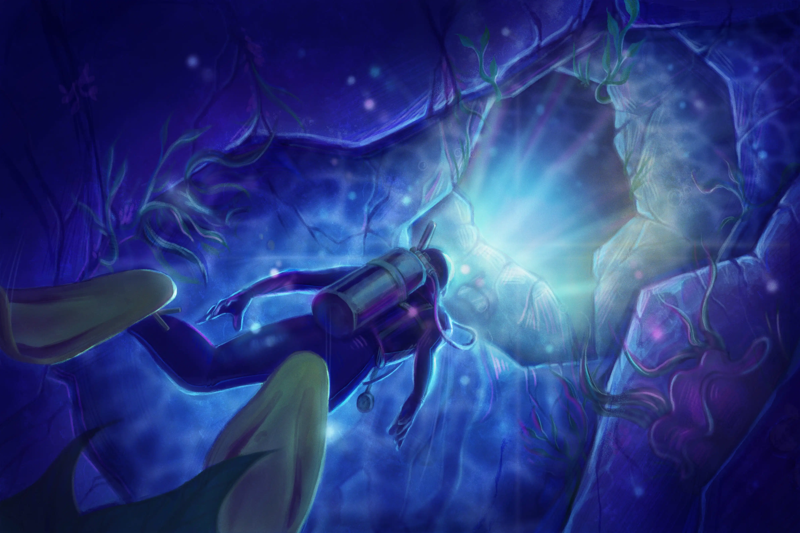
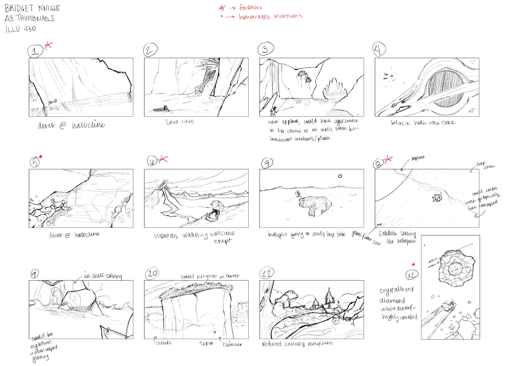
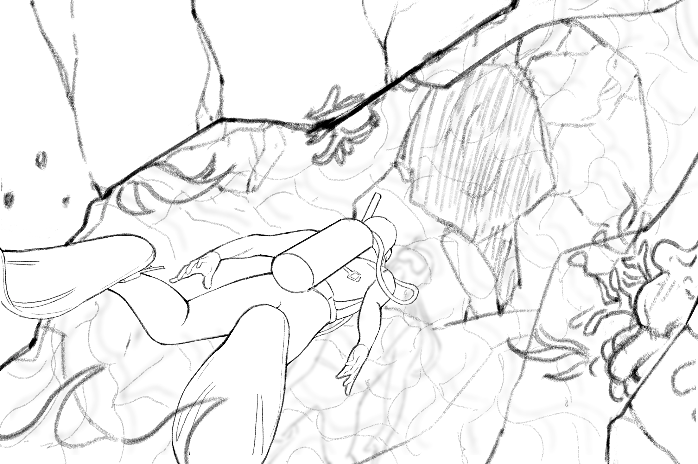

halocline
The halocline is a natural phenomenon that occurs where freshwater and saltwater meet, creating a distinct boundary layer with unique optical properties due to their different densities, resembling an ocean within an ocean. This project explores the halocline through both a 3D ambient environment and a 2D narrative illustration, each offering a different perspective on the same subject. The 3D environment invites viewers to immerse themselves in the ethereal beauty of the halocline, while the 2D illustration captures the moment of encounter between a diver and this mysterious boundary, emphasizing scale and human presence within this otherworldly setting.
3D Environment

The 3D environment was designed to evoke the surreal, disorienting, but beautiful experience of being at the halocline boundary. The scene is built around a flat plane representing the halocline, with a volumetric water column above and below to provide atmosphere. The halocline boundary is the star of the show, with volumetric absorption and refraction shaders layered with animated noise textures to create the characteristic distortion and turbulence. Bioluminescent particles are distributed along the boundary to add visual interest and a sense of life within the environment, both above and below the boundary. The primary lighting and atmospheric effects were added in post in DaVinci Resolve, completing the pipeline from concept to final render. Ambient audio was added to complement the visuals, using low-frequency, resonant sounds and gentle drones to enhance the feeling of being submerged in this unique underwater world.
2D Illustration

Where the 3D environment asks you to experience the halocline, the 2D illustration asks you to approach it. The diver gives it scale and a sense of space, something the render deliberately withholds. I was interested in the moment just before contact with the boundary, when the distortion is visible but not yet experienced. The lighting was the challenge: it had to do two things at once -- read as a portal into deeper water below, from the diver's already-underwater perspective, and also read as a bioluminescent source below, with the figure caught between them. I chose to capture the moment of anticipation just before crossing this otherworldly boundary.
Process
Click an image to get a closer look.


